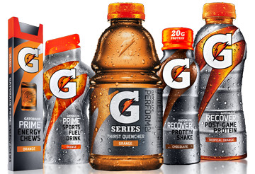

Detalhes
Por definição, Gatorade é considerado um repositor hidroeletrolítico. Sua composição é similar à de um soro fisiológico: água, açúcar e sal, além de aromatizantes e corantes que variam de acordo com o sabor. A concentração de carboidratos da fórmula, cerca de 6%, tem o objetivo de facilitar o rápido esvaziamento gástrico, evitando a sensação de "estômago pesado", uma característica desejável para praticantes de atividade física.
Gatorade é a bebida oficial de equipes de futebol como Botafogo, Flamengo,Santos, São Paulo,Cruzeiro, Palmeiras, Grêmio, Paysandu e Bahia. A marca também patrocina a Super Liga de Vôlei, além de maratonas e um grande número de organizações esportivas profissionais e universitárias, disponibilizando o produto aos atletas e ajudando na hidratação das equipes.
O envolvimento e preocupação da marca com pesquisas científicas traduz na evolução dos seus produtos.Com isso em mente, a Gatorade Company criou o GSSI (Gatorade Sports Science Institute), um instituto de pesquisa sem fins lucrativos, que publica estudos nas diversas áreas da ciência esportiva.
O Gatorade Sports Science Institute (GSSI) é um instituto de pesquisa criado em 1988 pela Gatorade Company. Segundo a empresa, com o objetivo do instituto é de compartilhar informações e expandir os conhecimentos nas áreas de nutrição e ciências do esporte.
